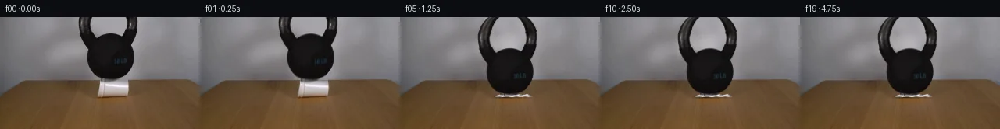

![首帧]()

Round 00
2026-11-05T20:02:51.047640+00:00像素候选变化代码 +369/−0inspection 更新
pixels 95cfd55c4429625c · code e15c2b615584f6cf
查看本轮 generate.py 真实 diff
--- previous/generate.py
+++ current/generate.py
@@ -0,0 +1,369 @@
+"""Pixel-only continuation of the supplied frame; no models or scene engines."""
+from pathlib import Path
+import base64
+import hashlib
+import json
+import re
+
+import cv2
+import numpy as np
+from PIL import Image, ImageDraw
+from scipy.ndimage import gaussian_filter, map_coordinates
+
+from artifact_io import save
+
+ROOT = Path(__file__).resolve().parent
+W, H, N, FPS = 256, 144, 20, 4
+PAD, SS = 40, 4
+SOURCE = np.asarray(Image.open(ROOT / 'first_frame.png').convert('RGB'))
+Y, X = np.mgrid[:H, :W].astype(np.float32)
+DROP = np.array([0, .35, 1.6, 17.8, 19.4, 19.2, 19.35] + [19.35] * 13)
+DRIFT = np.array([0, -.025, -.12, -.72, -.95, -.91, -.93] + [-.93] * 13)
+
+
+def polygon_mask(points, shape=(H, W)):
+ canvas = Image.new('L', (shape[1] * SS, shape[0] * SS))
+ ImageDraw.Draw(canvas).polygon([(round(x * SS), round(y * SS)) for x, y in points], fill=255)
+ return np.asarray(canvas.resize((shape[1], shape[0]), Image.Resampling.LANCZOS), dtype=np.float32) / 255
+
+
+def composite(bg, rgb, alpha):
+ return bg * (1 - alpha[..., None]) + rgb * alpha[..., None]
+
+
+def smoothstep(a, b, x):
+ u = np.clip((x - a) / (b - a), 0, 1)
+ return u * u * (3 - 2 * u)
+
+
+def remap(a, mx, my):
+ return cv2.remap(a.astype(np.float32), mx.astype(np.float32), my.astype(np.float32),
+ cv2.INTER_LINEAR, borderMode=cv2.BORDER_CONSTANT, borderValue=0)
+
+
+def extract_masks():
+ # Measured outer contour. The hole follows the actual wall/metal boundary.
+ outer = [(101.4, -3), (175.6, -3), (176.1, 7), (175.5, 15),
+ (174.2, 20), (172.4, 25), (170.3, 30), (167.3, 35),
+ (169.7, 40), (171.7, 47), (171, 54), (168.4, 61),
+ (164.9, 67), (160.1, 73), (153.1, 77.7), (147.6, 80),
+ (139.6, 81), (132, 80), (124.6, 77), (119.5, 72),
+ (115.4, 66), (112.5, 60), (111.2, 53), (111.2, 46),
+ (113.1, 39), (109.0, 35), (106.2, 30), (104, 25),
+ (102.1, 20), (100.7, 13), (100.5, 7), (101.4, 0)]
+ hole = [(117.8, -3), (161.5, -3), (162.7, 6), (162.0, 12),
+ (160.5, 17), (158.8, 20), (155.2, 24.4), (151.2, 22.3),
+ (145.0, 20.5), (139, 20.1), (132.6, 21.1), (127.7, 23.0),
+ (123.7, 25.1), (120.4, 20.5), (118.4, 16), (116.6, 11),
+ (116.1, 6), (117.0, 0)]
+ support = np.clip(polygon_mask(outer) - polygon_mask(hole), 0, 1)
+ # Broad support only supplies a search region; edge opacity comes from the
+ # input pixels. This also retains highlights inside the cast-metal handle.
+ allowed = cv2.dilate((support > .3).astype(np.uint8), np.ones((3, 3), np.uint8)) > 0
+ allowed[82:] = False
+ dark = SOURCE.astype(np.float32).mean(2)
+ seed = (support > .4) & (dark < 137)
+ interior = cv2.erode(seed.astype(np.uint8), np.ones((3, 3), np.uint8)) > 0
+ local_bg = cv2.GaussianBlur(np.where(seed, 165., dark).astype(np.float32), (0, 0), 4)
+ alpha = np.clip((local_bg - dark) / np.maximum(local_bg - 18, 60), 0, 1)
+ alpha[~allowed] = 0
+ alpha[interior] = 1
+ # Fill the high-intensity metal highlights and interior source pixels.
+ alpha[(support > .98) & (dark < 137)] = 1
+ alpha[alpha < .025] = 0
+ # Source cup, including its lower tinted wall; excluding its table shadow.
+ cup_points = [(127.8, 81), (163.2, 80.8), (164.8, 88.8),
+ (163.6, 98.5), (163.2, 101.5), (160.3, 102.1),
+ (129.2, 102.1), (125.4, 101.5), (125.2, 98.5),
+ (126.6, 89.0)]
+ cup = polygon_mask(cup_points)
+ # No resampling is involved in frame 00; these masks describe subsequent
+ # compositing and source recovery only.
+ return alpha, cup
+
+
+WEIGHT_ALPHA, CUP_ALPHA = extract_masks()
+UNION = np.maximum(WEIGHT_ALPHA, CUP_ALPHA)
+MASK = (UNION > 0).astype(np.uint8) * 255
… diff truncated; 282 more lines …